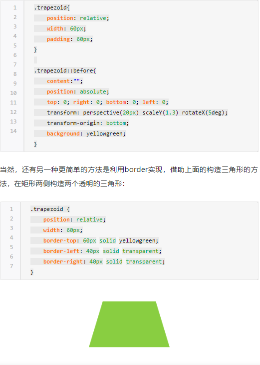
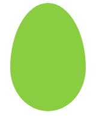
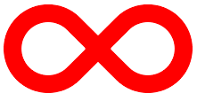
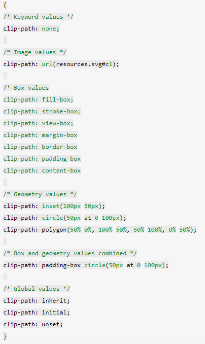
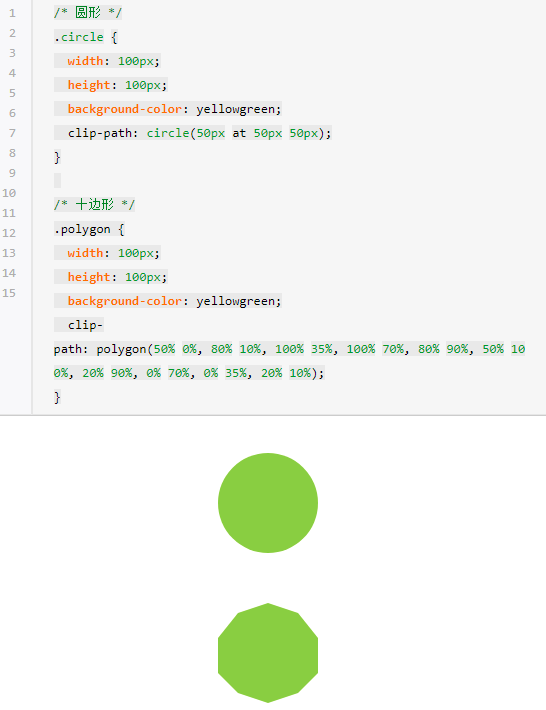

前言
CSS动画库 （转载自知乎博主十个推荐的CSS动画库）
一些CSS牛逼样式图形
一、十个值得推荐的CSS动画库
1. Animista(生成器)
emmm,简直不要太爽！可视化自动生成！
2. Animation.css（调用库）
当然，我也必须提及Animate CSS，也许这是一个众所周知的动画库。
1.使用
Install with npm:
1 | npm install animate.css --save |
or add it directly to your webpage using a CDN:
1 | <head> |
然后在你需要添加动画的元素上添加animated类名，然后就是添加动画的名称。比如
1 | <div class="animated slideInLeft"></div> |
如果你希望动画是持久的，你可以添加infinite类，这样动画将不停地重复自身。
- 通过 JavaScript
1 | document.querySelector('.my-element').classList.add('animated', 'slideInLeft') |
- 通过 Jquery
1 | $(".my-element").addClass("animated slideInLeft") |
2.额外的特性
Animate CSS为你提供了一些基本的类去操作动画的延时和速度。
- 延时
你可以通过使用delay类来延迟你的动画。
1 | <div class="animated slideInLeft delay-{1-5}"><div> |
- 速度
你可以通过添加下表中的类来控制动画的速度。
| Class name | Speed time |
|---|---|
| slow | 2s |
| slower | 3s |
| fast | 800ms |
| faster | 500ms |
1 | <div class="animated slideInLeft slow|slower|fast|faster"><div> |
3. Vivify（调用库）
它的使用一样，有自己更多的类，但是也扩展了些。添加vivify类到元素中，而不是animated。比如：
1 | <div class="vivify slideInLeft"></div> |
- 使用 Javascript
1 | document.querySelector('.my-element').classList.add('vivify', 'slideInLeft') |
- 使用 Jquery
1 | $(".my-element").addClass("vivify slideInLeft") |
就像Animate CSS一样，Vivify也为你提供了一些类来控制动画的持续时间和延迟时间。
延迟和持续时间的类在下面的间隔中可用：
1 | <div class="delay|duration-{100|150|200|250...1000|1250|1500|1750...10750}"></div> |
注意：值的单位是毫秒（ms）。1000ms = 1s
4. Magic Animations CSS3（调用库）
官网暂无相应（可能我不会用）
这个动画库有些不错并且流畅的动画，我特别喜欢3D动画。
没什么好说的，自己去尝试下，玩下动画。
你可以添加magictime {animation_name}到你的元素中，如下：
1 | <div class="magictime fadeIn"></div> |
- 使用 Javascript
1 | document.querySelector('.my-element').classList.add('magictime', 'fadeIn') |
- 使用 Jquery
1 | $(".my-element").addClass("magictime fadeIn") |
5. cssanimation.io（调用库）
此时，我打不开它。。。
cssanimation.io是一大堆不同动画的集合，总共大约有200个，真是太神奇了。
如果在这里都找不到你想要的动画，那你在哪都找不到了。
它的使用方式类似animista。比如，你可以直接选择动画，然后直接从网站中获取，或者下载整个库。
使用
为你的元素添加cssanimation {animation_name}。
1 | <div class="cssanimation fadeIn"></div> |
- 使用 Javascript
1 | document.querySelector('.my-element').classList.add('cssanimation','fadeIn') |
- 使用 Jquery
1 | $(".my-element").addClass("cssanimation fadeIn") |
你也可以添加infinite类，以便动画不断重复。
1 | <div class="cssanimation fadeIn infinite"></div> |
此外，cssanimations.io为你提供了动画字母的功能。为了实现这个，你需要在head标签中引入letteranimation.js文件，然后在你的文本元素中添加le{animation_name}。
1 | <div class="cssanimation leSnake"></div> |
想要字母动画有序进行，添加sequence类；想要字母动画无序进行，添加random类。
1 | <div class="cssanimation leSnake {sequence|random}"></div> |
6. Angrytools（生成器）
如果使用生成器（Angrytools不错），Angrytools实际上是一个集合，其中还包括CSS动画生成器。
这个网站也为你提供了定制动画的功能，比如持续时间和延迟时间。
最重要的是，你可以在时间线上添加keyframes（关键帧），并且你可以直接在那里写代码。而且，你也可以编辑现有的一个效果。
7. Hover.css（调用库）
Hover.css是众多CSS动画的集合，与上面的动画不同，每次将元素悬停时都会触发。
一组CSS3驱动的悬停效果，可以应用到链接，按钮，logos，svg，图片特性和其他。
它有一些惊人的动效。而且它还有用于动画图标的类，比如超棒的字体。
使用
使用很简单：将类名添加到你的元素中，比如：
1 | <button class="hvr-fade">Hover me!</button> |
8. WickedCSS （调用库）
WickedCSS是一个小型的CSS动画库，没有太多的动画体，但是它至少有很棒的动画。它们中大多数是我们熟悉的基本动画，但是它们真是很简洁。
使用方法很简单，只要为你的元素添加动画名就行了。
1 | <div class="bounceIn"></div> |
- 使用 Javascript
1 | document.querySelector('.my-element').classList.add('bounceIn') |
- 使用 Jquery
1 | $(".my-element").addClass("bounceIn") |
9. Three Dots（调用库）
Three Dots是CSS加载动画的集合，仅由三个简单元素制作而成的三个点创建。
使用
创建一个div元素，然后添加动画名。
1 | <div class="dot-elastic"></div> |
10. CSSHake（调用库）
最后，来点摇晃的抖动。
如其名，CSShake包含了不同类型的抖动动画的CSS动画库。
- 使用
添加shake {animation_name}到你的元素中。
1 | <div class="shake shake-hard"></div> |
- 使用 Javascript
1 | document.querySelector('.my-element').classList.add('shake','shake-hard') |
- 使用 Jquery
1 | $(".my-element").addClass("shake shake-hard") |
二、神奇的CSS多边形绘制
转载自 手记
CSS3之前，我们能做的只有矩形，四四方方，条条框框
CSS3出来后，我们有了更广阔的施展空间，通过
border-radiusbordertransform- 伪元素配合
- gradient 渐变
我们能够作出非常多的几何图形。
传统方式绘制
除去最常见的矩形，圆形（border-radius），下面稍微列举一些其他几何图形：
1 | <div class="container"> |
1. 三角形
通常会使用透明的border模拟出一个三角形：
1 | .traingle { |
2. 切角
《CSS Secret》里面的方法，采用多重线性渐变实现切角。
1 | .notching { |
3. 梯形
利用伪元素加旋转透视实现梯形：

4. 五边形
梯形加上三角形，很容易就组合成一个五边形，这里需要借助一个伪元素实现：
1 | .pentagon { |
5. 六边形
看看上面的梯形，如果两个反方向且底边同样大小的梯形，叠加在一起，是不是就能得到一个六边形
1 | .hexagon { |
6. 八边形
六边形都解决了，八边形也不在话下，一个矩形加上两个梯形，可以合成一个八边形。
1 | .octagon { |
7. 五角星
好的，探索完多边形，我们继续探索X角星——-这里使用 3 个三角形叠加旋转在一起实现。
1 | .star { |
8. 六角星
六角星呢？想象一下，一个向上的三角形 ▲，叠加上一个向下的三角形 ▼，就可以得到一个六边形：
1 | .sixstar { |
9. 八角星
八角星呢？八个角那么多呢。其实使用两个矩形进行旋转拼接就可以了。
1 | .eightstar { |
10. 十二角星
好。最后多角星再来一个十二级角星。在八角星的基础上，再增加一个矩形，就能得到十二角啦。也就是要过第一个伪元素。
1 | .twelvestar { |
11. 椭圆
最后，再来使用传统的方法画一个椭圆，过去 CSS3 画椭圆，基本上只能借助 border 实现。
这里使用 border 画一个蛋的形状：
1 | .ellipse { |

12. 爱心
1 | #heart { |
13. 无穷大
1 | #infinity { |

14. 食逗人（Pac-Man）
1 | #pacman { |
15. 提示对话框
1 | #talkbubble { |
16. 阴阳八卦
1 | #yin-yang { |
CSS3新绘制方式
上面所讲述的是使用传统 CSS3 的方式绘制几何图形，前人栽树后人乘凉，之前的大牛们在 CSS 绘制几何图形上已经做了非常深入的研究，更多的 CSS 图形你可以戳这里：The Shapes of CSS 。接下来我们将要了解一些更高级的绘制几何图形的方法。
- clip-path
- shape-outside
1. clip-path
CSS 新属性 clip-path，意味裁剪路径的意思，让我们可以很便捷的生成各种几何图形。
clip-path 通过定义特殊的路径，实现我们想要的图形。而这个路径，正是 SVG 中的 path 。
看看它的 API：

看上去很多，其实很好理解，如果接触过 SVG 的 path，其实就是照搬 SVG 的 path 的一些定义。换言之，如果没有接触过 SVG，看完本文后再去学习 SVG 路径 ，也会十分容易上手。
根据不同的语法，我们可以生成不同的图形。
例如 clip-path: circle(50px at 50px 50px) 表示在元素的 （50px, 50px）处，裁剪生成一个半径为 50px 的圆。
而整个 clip-path 属性，最为重要的当属 polygon，可以利用 polygon 生成任意多边形。clip-path 示例
下面分别列举使用 clip-path 生成一个圆形和一个十边形。

clip-path: polygon(50% 0%, 80% 10%, 100% 35%, 100% 70%, 80% 90%, 50% 100%, 20% 90%, 0% 70%, 0% 35%, 20% 10%) 中，依次列出了 10 个坐标点。我们的图形就是依次连接这 10 个坐标点形成一个裁切图形。
当然，这里采用的是百分比，也可以使用具体的数值。
2. clip-path 动画
clip-path 另外一个强大之处在于可以进行 CSS transtion 与 CSS animation，也就是过渡和动画。
效果见这儿
1 | .polygon-animate { |
图形变换动画
除此之外，我们还可以尝试，将一个完整的图形，分割成多个小图形，这也是 clip-path 的魅力所在，纯 CSS 的图形变换：
3. shape-outside
最后再来看看 shape-outside，另外一个有趣的有能力生成几何图形的属性。
shape-outside 是啥？它也有制造各种几何图形的能力，但是它只能和浮动 float 一起使用。
虽然使用上有所限制，但是它赋予了我们一种更为自由的图文混排的能力。